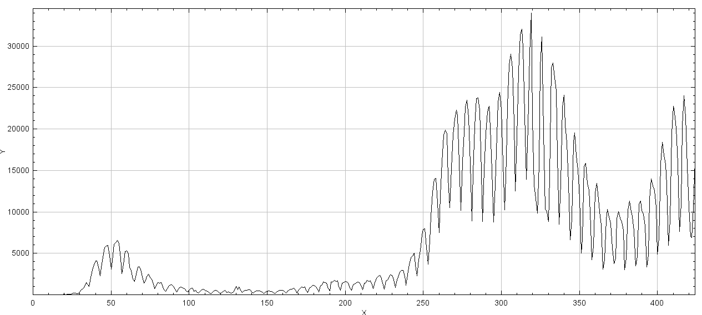

Will Corona Ever End?
Submission deadline: 16.05.21 23:55h
Please ensure that all files you created also contain your name and your IDM ID and also your partner's name and IDM ID if you're not working alone.
Each exercise has 10 points. You have to achieve 30 of 60 points in six homework exercises to pass the module.
Infinite Signals!
3 Points
Right now our Signal class only represent a signal of finite length. Now we want to extend our signal class.
In our black board exercises, we agreed that we want to continue our signals with zeros where we don't have any values stored.
If we access indices of our Signal with values smaller than minIndex() or larger maxIndex() we want to return 0.0f.
If a user accesses an index between minIndex() and maxIndex() we want to return the corresponding value stored in our array.

Implement the method atIndex and setAtIndex and minIndex/maxIndex for Signal.
Please be aware that minIndex can be smaller than 0 for subclasses of Signal.
If setAtIndex is called with an invalid index (smaller than minIndex or greater than maxIndex), it's ok for the program to crash.
This should not happen for atIndex.
Signal should add the following member
protected int minIndex; //Index of first array element (should be 0 for signals)
Implement the methods explained above for Signal
public int minIndex() // Get lowest index of signal (that is stored in buffer)
public int maxIndex() // Get highest index of signal (that is stored in buffer)
public float atIndex(int i)
public void setAtIndex(int i, float value)
You can check the correctness of atIndex/setAtIndex with the test testAtIndex in file src/test/java/SignalTests.java
LinearFilter
3 Points
Implement LinearFilter in file src/main/java/mt/LinearFilter.java as a subclass of Signal.
LinearFilter should work like Signal except its minIndex should be at
- (coefficients.length/2) as in the exercise slides.

LinearFilter should have a constructor that checks that coefficients is an array of odd size or throws an error otherwise (any error is ok).
public LinearFilter(float[] coefficients, String name)
and a method that executes the discrete convolution on another Signal input and returns an output of same size.
public Signal apply(Signal input);
You should be able to directly use the formula from the exercise slides (f is the input signal, h our filter, $L$ the filter length)
$$K = \lfloor L/2 \rfloor$$ $$g[k] = \sum_{\kappa=-K}^{K} f[k-\kappa] \cdot h[ \kappa ]$$
or with our minIndex/maxIndex methods for each index $k$ of the output signal.
$$g[k] = \sum_{\kappa=h.\text{minIndex}}^{h.\text{maxIndex}} f[k-\kappa] \cdot h[\kappa] $$
Be sure that you use atIndex to access the values of input and the filter.

You can test your convolution function with the tests provided in src/test/java/LinearFilterTests.java. For the test you will also need to download the file src/main/java/lme/Algorithms.java.
Good test cases are:
{0,0,1,0,0}: this filter should not change your signal at all{0,1,0,0,0}: this filter should move your signal one value to the left{0,0,0,1,0}: this filter should move your signal one value to the right
Get the Current RKI Data
4 Points
To see whether the Corona situation will ever improve we want to have a look at newest data from RKI institute. Open the file
// <your name> <your idm>
// <your partner's name> <your partner's idm> (if you submit with a group partner)
public static void main(String[] args) throws MalformedURLException, IOException {
JSONObject response = readJsonFromUrl("https://api.corona-zahlen.org/germany/history/cases");
}
response will contain a JSONObject from the org.json library
(it was installed by adding implementation 'org.json:json:20201115' to your build.gradle). The template for Exercise 2 to use the function above can be downloaded from here: Exercise2.java
It contains the newest data from the Robert-Koch-Institute (via https://github.com/marlon360/rki-covid-api) with the following JSON schema:
{
"data": [
{
"cases": 1,
"date": "2020-01-07T00:00:00.000Z"
},
{
"cases": 1,
"date": "2020-01-19T00:00:00.000Z"
},
{
"cases": 1,
"date": "2020-01-23T00:00:00.000Z"
},
{
"cases": 1,
"date": "2020-01-25T00:00:00.000Z"
},
{
"cases": 2,
"date": "2020-01-28T00:00:00.000Z"
},
{
"cases": 2,
"date": "2020-01-29T00:00:00.000Z"
},
//...
]
}
Yes, on 2020-01-07 the situation was still pretty good. But what is the situation right now?
Create a Signal from the JSONObject with the number of cases for each day! Display the signal with
its show() method.

Well this looks very wavy... Let's filter this signal!
Apply the following filters on your signal:
$$ h_1 = \left[ \frac{1.0}{7.0}, \frac{1.0}{7.0}, \frac{1.0}{7.0}, \frac{1.0}{7.0}, \frac{1.0}{7.0}, \frac{1.0}{7.0}, \frac{1.0}{7.0}\right] $$

$$ h_2 = \left[ 1.0, 0.0, 0.0, 0.0, 0.0, 0.0, -1.0 \right]$$

What happens when you apply $h_1$ and then $h_2$? What happens when you first apply $h_2$ and then $h_1$? What do the individual filters calculate?
Submitting
Please ensure that all files you created also contain your name and your IDM ID and also your partner's name and IDM ID if you're not working alone. You only need to submit the code. No need to submit answers to the questions in the text.
Then, compress your source code folder src to a zip archive (src.zip) and submit it via StudOn!